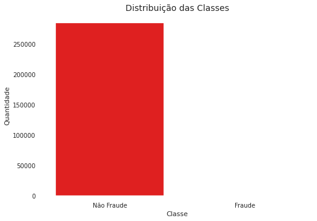
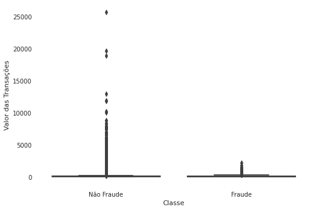
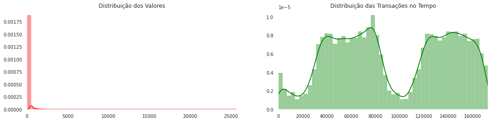
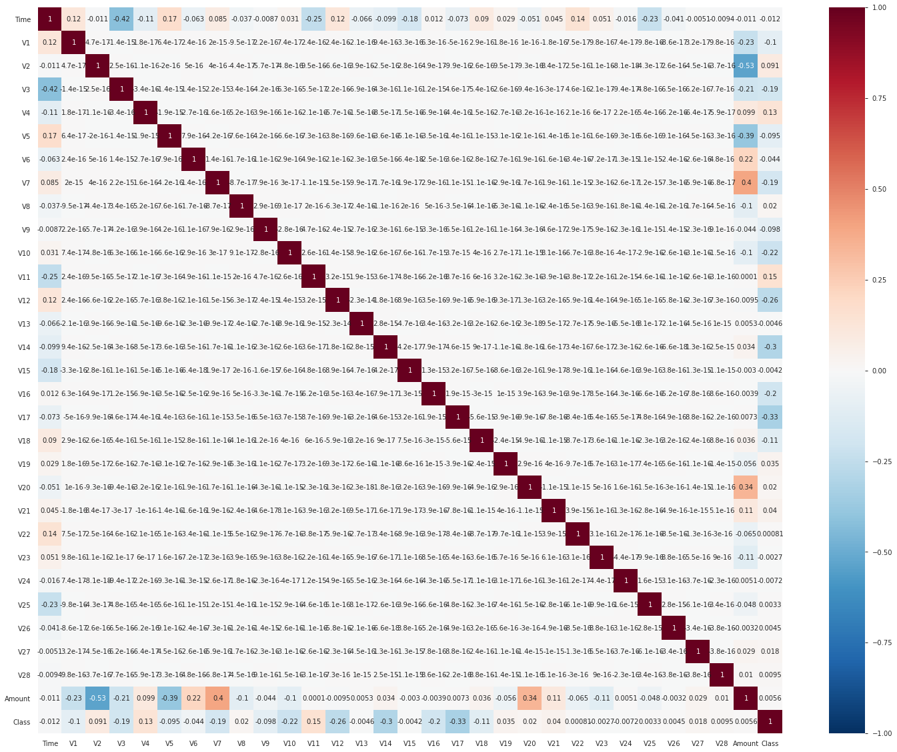
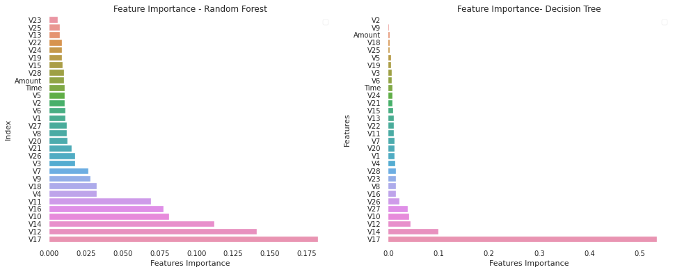
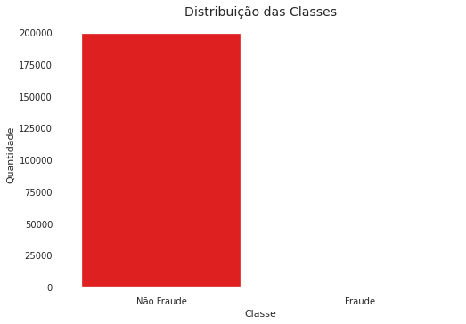
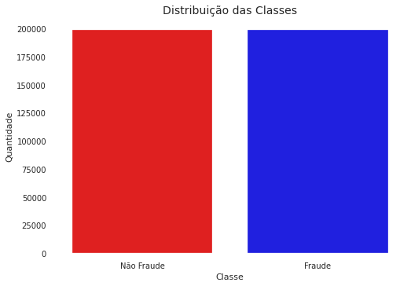
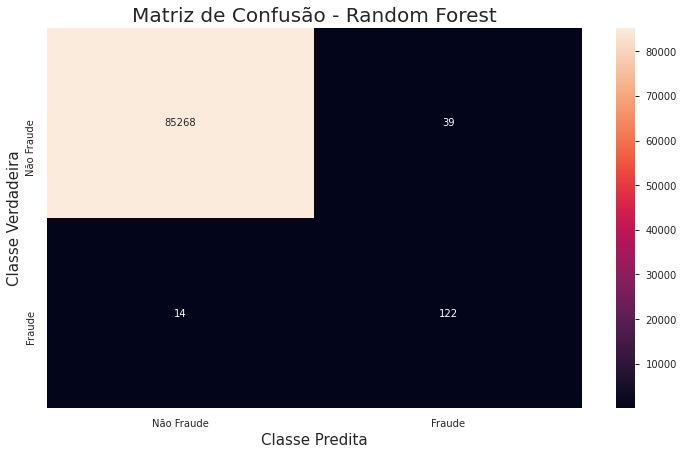

7. Machine Learning
7.1 Métodos Ensemble

Fonte: Global Software
Trabalho Final - Aprendizagem Não Supervisionada
Matheus Jericó Palhares - 26 Maio 2020
É de extrema importância que as empresas identifiquem e reconheçam transações fraudulentas com cartão de crédito, para que os cliente não sejam cobrados pelos itens que não compraram e, as empresas não tomem prejuízo devido a fraude (Kaggle, 2020).
O dataset contém transações realizadas com cartões de crédito em setembro de 2013 por portadores de cartões europeus. Este conjunto de dados apresenta transações que ocorreram em dois dias, nas quais temos 492 fraudes em 284.807 transações. O conjunto de dados é altamente desequilibrado, a classe positiva (fraudes) representa 0,172% de todas as transações (Kaggle, 2020).
O dataset contém apenas variáveis de entrada numéricas que são o resultado de uma transformação PCA (problemas de confidencialidade. Features de V1, V2, até V28 são os principais componentes obtidos com o PCA, os únicos recursos que não foram transformados com o PCA são ‘Tempo’ e ‘Valor’. O recurso ‘Classe’ é a variável de resposta e assume o valor 1 em caso de fraude e 0 em caso contrário (Kaggle, 2020).
Para resolução do problema, utilizaremos algoritmos de aprendizagem supervisionada. Como o dataset é desbalanceado, mostraremos uma solução de balanceamento (Kaggle, 2020).
Utilizamos o framework Scikit-learn para construção dos algorítmos de aprendizagem supervisionada.
Distribuição das classificações dos dados:
Transações Não Fraudulentas: 99.83%.
Transações Fraudulentas: 0.17%.
Análise:
Fraude: Não Fraude:
count 492.000000 count 284315.000000
mean 122.211321 mean 88.291022
std 256.683288 std 250.105092
min 0.000000 min 0.000000
25% 1.000000 25% 5.650000
50% 9.250000 50% 22.000000
75% 105.890000 75% 77.050000
max 2125.870000 max 25691.160000
Name: Amount, dtype: float64 Name: Amount, dtype: float64
Análise:

Análise:

Para analisar as features mais relevantes para detecção de Fraude, utilizamos dois algoritmos do método Ensemble.

Entre os dois algoritmos, tivemos pouca divergência. Entretando, considerei o resultado das features mais importantes do algoritmo Random Forest, pois o mesmo pondera mais variáveis para tomada de decisão.
Após analisar a análise de feature importance, removemos as 5 features com menor importância para redução na quantidade de dados.
Features com menor importância: ['V23', 'V25', 'V13', 'V22', 'V24']

Fonte: Global Software
No Bagging os classificadores são treinados de forma independente por diferentes conjuntos de treinamento através do método de inicialização. Para construí-los é necessário montar k conjuntos de treinamento idênticos e replicar esses dados de treinamento de forma aleatória para construir k redes independentes por re-amostragem com reposição. Em seguida, deve-se agregar as k redes através de um método de combinação apropriada, tal como a maioria de votos (Maisa Aniceto, 2017).
No Boosting, de forma semelhante ao Bagging, cada classificador é treinado usando um conjunto de treinamento diferente. A principal diferença em relação ao Bagging é que os conjuntos de dados re-amostrados são construídos especificamente para gerar aprendizados complementares e a importância do voto é ponderado com base no desempenho de cada modelo, em vez da atribuição de mesmo peso para todos os votos. Essencialmente, esse procedimento permite aumentar o desempenho de um limiar arbitrário simplesmente adicionando learners mais fracos (Maisa Aniceto, 2017). Dada a utilidade desse achado, Boosting é considerado uma das descobertas mais significativas em aprendizado de máquina (LANTZ, 2013).
Comparamos o desempenho dos Algorítmos: Logistic Regression, Naive Bayes, Decision Tree, Random Forest, XGBoosting, Gradient Boosting.
Nome do Modelo | Acurácia Média | Desvio Padrão
Logistic Regression: 94.28% 0.03%
Naive Bayes: 90.11% 0.06%
Decision Tree: 99.7% 0.02%
Random Forest: 99.98% 0.0%
XGB Classifier: 99.95% 0.0%
Gradient Boosting Classifier: 97.56% 0.04%
SVM: 97.19% 0.04%Análise:
Parâmetros escolhidos para tunning:
precision recall f1-score support
0 1.00 0.97 0.99 85307
1 0.05 0.93 0.10 136
accuracy 0.97 85443
macro avg 0.53 0.95 0.54 85443
weighted avg 1.00 0.97 0.98 85443
------------------------------------------------------
Matriz de Confusão:
[83016 2291]
[ 10 126]
------------------------------------------------------
Logistic Regression f1-score: 0.09870740305522914Parâmetros escolhidos para tunning:
precision recall f1-score support
0 1.00 1.00 1.00 85307
1 0.68 0.88 0.77 136
accuracy 1.00 85443
macro avg 0.84 0.94 0.88 85443
weighted avg 1.00 1.00 1.00 85443
------------------------------------------------------
Matriz de Confusão:
[85252 55]
[ 17 119]
------------------------------------------------------
GradientBoostingClassifier f1-score: 0.767741935483871Parâmetros escolhidos para tunning:
precision recall f1-score support
0 1.00 1.00 1.00 85307
1 0.73 0.88 0.80 136
accuracy 1.00 85443
macro avg 0.86 0.94 0.90 85443
weighted avg 1.00 1.00 1.00 85443
------------------------------------------------------
Matriz de Confusão
[85262 45]
[ 16 120]
------------------------------------------------------
XGBClassifier f1-score: 0.7973421926910299Parâmetros escolhidos para tunning:
precision recall f1-score support
0 1.00 1.00 1.00 85307
1 0.76 0.90 0.82 136
accuracy 1.00 85443
macro avg 0.88 0.95 0.91 85443
weighted avg 1.00 1.00 1.00 85443
------------------------------------------------------
Matriz de Confusão
[85268 39]
[ 14 122]
------------------------------------------------------
RandomForestClassifier f1-score: 0.8215488215488216Métrica ROC AUC:
Logistic Regression: 94.98%
Gradient Boosting Classifier: 93.72%
XGB Classifier: 94.1%
Random Forest Classifier: 94.8%Análise:
Métrica Precisão (Precision):
Logistic Regression: 5.21%
Gradient Boosting Classifier: 68.39%
XGB Classifier: 72.7%
Random Forest Classifier: 75.78%Análise:
Métrica Revocação (Recall):
Logistic Regression: 92.65%
Gradient Boosting Classifier: 87.5%
XGB Classifier: 88.2%
Random Forest Classifier: 89.7%Análise:
Métrica F1-Score:
Logistic Regression: 9.87%
Gradient Boosting Classifier: 76.8%
XGB Classifier: 79.7%
Random Forest Classifier: 82.15%Análise:
Vamos analisar a matriz de confusão do algoritmo que obteve melhor desempenho.
